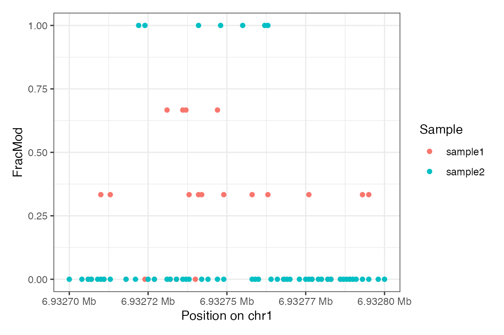
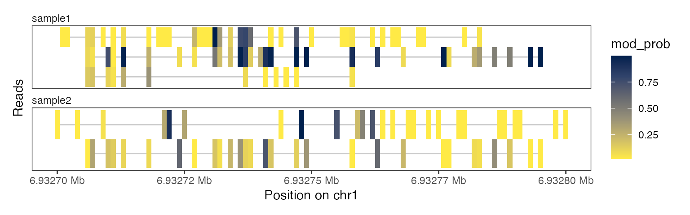
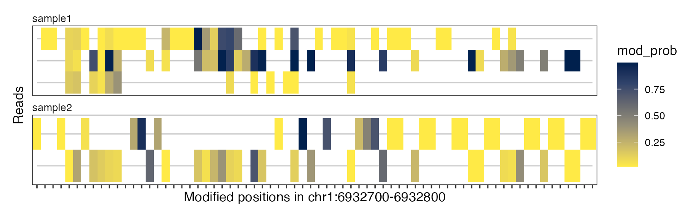
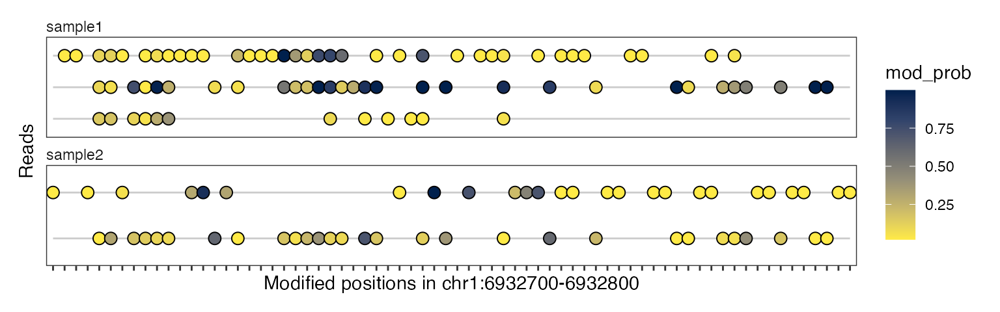

footprintR
vignettes/read-level-data.Rmd
read-level-data.RmdWe start the analysis by loading footprinting data at the level of
individual reads. Such data is typically generated by modkit from
modBam files (see also ?modkitExtract for a
wrapper function to do this directly from R) and then read using
readModkitExtract().
The footprintR package contains small example files that
were generated by ‘modkit extract’:
# load packages
library(footprintR)
library(SummarizedExperiment)
# read-level 6mA data generated by 'modkit extract'
extractfiles <- system.file("extdata",
c("modkit_extract_rc_6mA_1.tsv.gz",
"modkit_extract_rc_6mA_2.tsv.gz"),
package = "footprintR")
names(extractfiles) <- c("sample1", "sample2")These files can be read using readModkitExtract():
se <- readModkitExtract(extractfiles,
modbase = "a",
filter = "modkit")
se
#> class: RangedSummarizedExperiment
#> dim: 8539 20
#> metadata(2): modkit_threshold filter_threshold
#> assays(1): mod_prob
#> rownames(8539): chr1:6929104:+ chr1:6929106:+ ... chr1:6941530:-
#> chr1:6941531:-
#> rowData names(0):
#> colnames(20): sample1-233e48a7-f379-4dcf-9270-958231125563
#> sample1-d52a5f6a-a60a-4f85-913e-eada84bfbfb9 ...
#> sample2-7fc51790-2c6e-49e9-938c-985850ff85e7
#> sample2-573752c9-f768-46ff-9887-be555db141dc
#> colData names(1): sampleThis will create a RangedSummarizedExperiment object
with positions in rows and individual reads in columns:
# rows are positions...
rowRanges(se)
#> UnstitchedGPos object with 8539 positions and 0 metadata columns:
#> seqnames pos strand
#> <Rle> <integer> <Rle>
#> chr1:6929104:+ chr1 6929104 +
#> chr1:6929106:+ chr1 6929106 +
#> chr1:6929111:+ chr1 6929111 +
#> chr1:6929113:+ chr1 6929113 +
#> chr1:6929118:+ chr1 6929118 +
#> ... ... ... ...
#> chr1:6941513:- chr1 6941513 -
#> chr1:6941522:- chr1 6941522 -
#> chr1:6941524:- chr1 6941524 -
#> chr1:6941530:- chr1 6941530 -
#> chr1:6941531:- chr1 6941531 -
#> -------
#> seqinfo: 1 sequence from an unspecified genome; no seqlengths
# ... and columns are reads
colData(se)
#> DataFrame with 20 rows and 1 column
#> sample
#> <character>
#> sample1-233e48a7-f379-4dcf-9270-958231125563 sample1
#> sample1-d52a5f6a-a60a-4f85-913e-eada84bfbfb9 sample1
#> sample1-fc4646ce-66f9-401f-b968-e9b0cda14d61 sample1
#> sample1-92e906ae-cddb-4347-a114-bf9137761a8d sample1
#> sample1-6cf74134-e550-4c02-bd2b-91385422ee25 sample1
#> ... ...
#> sample2-d03efe3b-a45b-430b-9cb6-7e5882e4faf8 sample2
#> sample2-04784c5b-e31b-421f-a14c-7072ec62b50d sample2
#> sample2-9c27e4b2-d929-494a-8878-60c8fca73bf1 sample2
#> sample2-7fc51790-2c6e-49e9-938c-985850ff85e7 sample2
#> sample2-573752c9-f768-46ff-9887-be555db141dc sample2As you can see in the colData(se), reads are assigned to
samples. The sample names are obtained from the input files (here
extractfiles), or if the files are not names will be
automatically assigned (each file corresponding to a separate
sample).
The single assay mod_prob is a SparseMatrix
with modification probabilities.
assayNames(se)
#> [1] "mod_prob"
m <- assay(se, "mod_prob")
m
#> <8539 x 20 SparseMatrix> of type "double" [nzcount=47990 (28%)]:
#> sample1-233e48a7-f379-4dcf-9270-958231125563 ...
#> chr1:6929104:+ 0 .
#> chr1:6929106:+ 0 .
#> chr1:6929111:+ 0 .
#> chr1:6929113:+ 0 .
#> chr1:6929118:+ 0 .
#> ... . .
#> chr1:6941513:- 0 .
#> chr1:6941522:- 0 .
#> chr1:6941524:- 0 .
#> chr1:6941530:- 0 .
#> chr1:6941531:- 0 .
#> sample2-573752c9-f768-46ff-9887-be555db141dc
#> chr1:6929104:+ 0
#> chr1:6929106:+ 0
#> chr1:6929111:+ 0
#> chr1:6929113:+ 0
#> chr1:6929118:+ 0
#> ... .
#> chr1:6941513:- 0
#> chr1:6941522:- 0
#> chr1:6941524:- 0
#> chr1:6941530:- 0
#> chr1:6941531:- 0This matrix does not store the zeros and thus uses much less memory compared to a normal (dense) matrix. However, you have to be careful when interpreting the values in that matrix, as they follow a specific convention:
Important: The zeros correspond to unobserved read/position combinations, while all values that are ‘implicitly’ called by modkit (with a modifictation probability of less than 5%) are represented with a value of 0.02.
That means if you would be manually calculating for example the average modification probability at a given position, taking the row mean would not be correct, as it would include the zero values that correspond to unobserved data:
# modification probabilities at position chr1:6933269:+
m["chr1:6933269:+", ]
#> sample1-233e48a7-f379-4dcf-9270-958231125563
#> 0.0000000
#> sample1-d52a5f6a-a60a-4f85-913e-eada84bfbfb9
#> 0.0000000
#> sample1-fc4646ce-66f9-401f-b968-e9b0cda14d61
#> 0.9082031
#> sample1-92e906ae-cddb-4347-a114-bf9137761a8d
#> 0.0000000
#> sample1-6cf74134-e550-4c02-bd2b-91385422ee25
#> 0.8535156
#> sample1-5d45d8d2-d5f5-47ff-a9fa-f3fd6b7bd3c7
#> 0.7714844
#> sample1-b6fea9db-c92d-4152-9d29-4d021bbc45e8
#> 0.0000000
#> sample1-49c1e21e-8cb0-415a-aba9-92912219c4bb
#> 0.6074219
#> sample1-b0b20f04-931f-4f60-b3e4-0ee1f5666a61
#> 0.9902344
#> sample1-41ca0e97-11b3-454b-9741-bc373e29ef37
#> 0.0000000
#> sample2-daac487b-5406-42b5-b882-9020f1b03752
#> 0.0000000
#> sample2-034b625e-6230-4f8d-a713-3a32cd96c298
#> 0.0000000
#> sample2-274d50aa-f060-4bcf-901e-4cab771295f6
#> 0.0000000
#> sample2-3bee7d0d-d4cd-4b38-9839-10e1a0fce5de
#> 0.8300781
#> sample2-c0f0cdaa-216c-4c8a-8a2a-7e5c1e8445f5
#> 0.0000000
#> sample2-d03efe3b-a45b-430b-9cb6-7e5882e4faf8
#> 0.8574219
#> sample2-04784c5b-e31b-421f-a14c-7072ec62b50d
#> 0.6816406
#> sample2-9c27e4b2-d929-494a-8878-60c8fca73bf1
#> 0.9667969
#> sample2-7fc51790-2c6e-49e9-938c-985850ff85e7
#> 0.0000000
#> sample2-573752c9-f768-46ff-9887-be555db141dc
#> 0.0000000
# WRONG: take the mean of all values
mean(m["chr1:6933269:+", ])
#> [1] 0.3733398
# CORRECT: exclude the zeros
non_zero <- m["chr1:6933269:+", ] != 0
mean(m["chr1:6933269:+", non_zero])
#> [1] 0.8296441This is however rarely needed, as there are convenience functions
that will exclude the unobserved (zero) values automatically for you.
For example, you can summarize the reads in each sample using
summarizeOverReads() (see next section).
Summarized data can be obtained from the read-level data by calculating a summary on the reads from each sample:
se_summary <- summarizeOverReads(se, keep.reads = TRUE,
statistics = c("Nmod", "Nvalid", "FracMod", "Pmod"))As discussed above, this will automatically exclude the non-observed
(zero) values from the data when calculating the modification
probability at each position (Pmod assay):
assay(se_summary, "Pmod")["chr1:6933269:+", ]
#> sample1 sample2
#> 0.8261719 0.8339844The summary statistics to calculate are selected using the
statistics argument. By default,
summarizeOverReads() will count the number of modified
(Nmod) and total (Nvalid) reads at each
position and sample, and calculate the fraction of modified bases from
the two (FracMod).
In the above example, we in addition also calculate the average
modification probability (Pmod), and you could also
calcualte the averge confidence of the modkit calls per
position (AvgConf). As we have set
keep.reads = TRUE, we get in addition also the read-level
assay from the input object (mod_prob) in which the reads
are grouped by sample:
assayNames(se_summary)
#> [1] "Nmod" "Nvalid" "FracMod" "Pmod" "mod_prob"
assay(se_summary, "mod_prob")
#> DataFrame with 8539 rows and 2 columns
#> sample1 sample2
#> <SparseMatrix> <SparseMatrix>
#> chr1:6929104:+ 0:0:0.02:... 0:0:0:...
#> chr1:6929106:+ 0:0:0.02:... 0:0:0:...
#> chr1:6929111:+ 0:0:0.02:... 0:0:0:...
#> chr1:6929113:+ 0:0:0.02:... 0:0:0:...
#> chr1:6929118:+ 0:0:0.02:... 0:0:0:...
#> ... ... ...
#> chr1:6941513:- 0:0:0:... 0:0:0:...
#> chr1:6941522:- 0:0:0:... 0:0:0:...
#> chr1:6941524:- 0:0:0:... 0:0:0:...
#> chr1:6941530:- 0:0:0:... 0:0:0:...
#> chr1:6941531:- 0:0:0:... 0:0:0:...The collapsed data can then be visualized just like the summary-level
data using plotRegion, using the tracks.reads
argument instead of tracks.summary to select the type of
plot(s).
For reference, here we plot the summary-level data:
plotRegion(se_summary, region = "chr1:6932700-6932800",
tracks.summary = list(FracMod = "Point"))
… and here we plot the read-level data of the same region:
plotRegion(se, region = "chr1:6932700-6932800",
tracks.summary = NULL,
tracks.reads = list(mod_prob = "Heatmap"))
plotRegion(se, region = "chr1:6932700-6932800",
tracks.summary = NULL,
tracks.reads = list(mod_prob = "Lollipop"))The x-axis in these plots is in “base-space”, meaning that it shows the genomic coordinate on which the modified bases are irregularly spaced. Alternatively, we can also generate these plot in “modbase-space”, in which only modified bases are shown and the gaps between them are removed:
plotRegion(se, region = "chr1:6932700-6932800",
tracks.summary = NULL,
tracks.reads = list(mod_prob = "Heatmap"),
modbaseSpace = TRUE)
plotRegion(se, region = "chr1:6932700-6932800",
tracks.summary = NULL,
tracks.reads = list(mod_prob = "Lollipop"),
modbaseSpace = TRUE) ## Session info
sessionInfo()
#> R version 4.4.1 (2024-06-14)
#> Platform: aarch64-apple-darwin20
#> Running under: macOS Sonoma 14.5
#>
#> Matrix products: default
#> BLAS: /Library/Frameworks/R.framework/Versions/4.4-arm64/Resources/lib/libRblas.0.dylib
#> LAPACK: /Library/Frameworks/R.framework/Versions/4.4-arm64/Resources/lib/libRlapack.dylib; LAPACK version 3.12.0
#>
#> locale:
#> [1] en_US.UTF-8/en_US.UTF-8/en_US.UTF-8/C/en_US.UTF-8/en_US.UTF-8
#>
#> time zone: UTC
#> tzcode source: internal
#>
#> attached base packages:
#> [1] stats4 stats graphics grDevices utils datasets methods
#> [8] base
#>
#> other attached packages:
#> [1] SummarizedExperiment_1.35.1 Biobase_2.65.0
#> [3] GenomicRanges_1.57.1 GenomeInfoDb_1.41.1
#> [5] IRanges_2.39.1 S4Vectors_0.43.1
#> [7] BiocGenerics_0.51.0 MatrixGenerics_1.17.0
#> [9] matrixStats_1.3.0 footprintR_0.1.0
#>
#> loaded via a namespace (and not attached):
#> [1] tidyselect_1.2.1 farver_2.1.2
#> [3] dplyr_1.1.4 R.utils_2.12.3
#> [5] Biostrings_2.73.1 bitops_1.0-7
#> [7] fastmap_1.2.0 SingleCellExperiment_1.27.2
#> [9] RCurl_1.98-1.16 GenomicAlignments_1.41.0
#> [11] XML_3.99-0.17 digest_0.6.36
#> [13] lifecycle_1.0.4 magrittr_2.0.3
#> [15] compiler_4.4.1 rlang_1.1.4
#> [17] sass_0.4.9 tools_4.4.1
#> [19] utf8_1.2.4 yaml_2.3.9
#> [21] data.table_1.15.4 rtracklayer_1.65.0
#> [23] knitr_1.48 labeling_0.4.3
#> [25] S4Arrays_1.5.4 curl_5.2.1
#> [27] DelayedArray_0.31.8 abind_1.4-5
#> [29] BiocParallel_1.39.0 withr_3.0.0
#> [31] purrr_1.0.2 desc_1.4.3
#> [33] R.oo_1.26.0 grid_4.4.1
#> [35] fansi_1.0.6 beachmat_2.21.4
#> [37] colorspace_2.1-0 ggplot2_3.5.1
#> [39] scales_1.3.0 cli_3.6.3
#> [41] rmarkdown_2.27 crayon_1.5.3
#> [43] ragg_1.3.2 generics_0.1.3
#> [45] httr_1.4.7 rjson_0.2.21
#> [47] DelayedMatrixStats_1.27.2 scuttle_1.15.1
#> [49] cachem_1.1.0 zlibbioc_1.51.1
#> [51] parallel_4.4.1 XVector_0.45.0
#> [53] restfulr_0.0.15 vctrs_0.6.5
#> [55] Matrix_1.7-0 jsonlite_1.8.8
#> [57] patchwork_1.2.0 systemfonts_1.1.0
#> [59] jquerylib_0.1.4 glue_1.7.0
#> [61] pkgdown_2.1.0.9000 codetools_0.2-20
#> [63] gtable_0.3.5 BiocIO_1.15.0
#> [65] UCSC.utils_1.1.0 munsell_0.5.1
#> [67] tibble_3.2.1 pillar_1.9.0
#> [69] htmltools_0.5.8.1 GenomeInfoDbData_1.2.12
#> [71] BSgenome_1.73.0 R6_2.5.1
#> [73] textshaping_0.4.0 sparseMatrixStats_1.17.2
#> [75] evaluate_0.24.0 lattice_0.22-6
#> [77] highr_0.11 R.methodsS3_1.8.2
#> [79] Rsamtools_2.21.0 bslib_0.7.0
#> [81] Rcpp_1.0.13 SparseArray_1.5.21
#> [83] xfun_0.45 fs_1.6.4
#> [85] pkgconfig_2.0.3